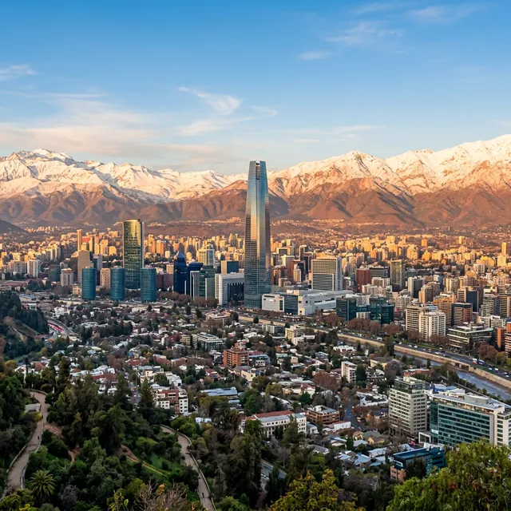
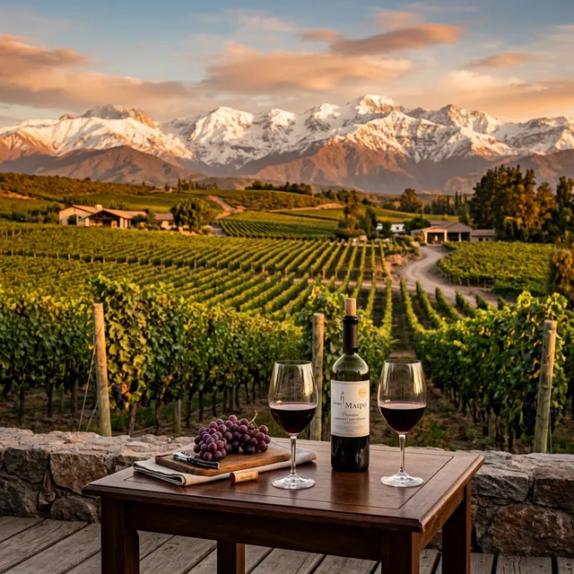
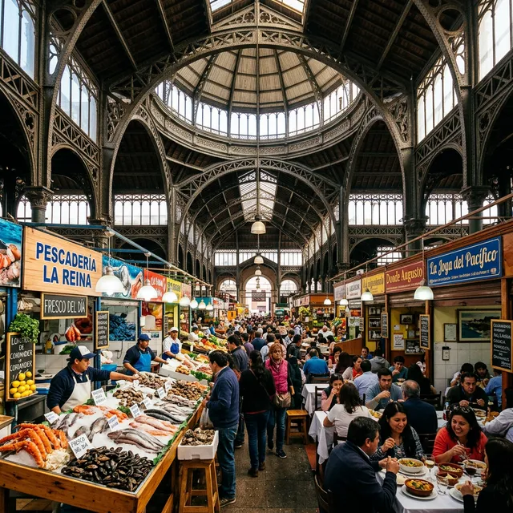

Onde a modernidade vibrante encontra a majestade eterna dos Andes.
Santiago é uma cidade de contrastes poderosos: arranha-céus espelhados com a imponência nevada dos Andes ao fundo, bairros boêmios ao lado de vinícolas centenárias. Setembro a abril traz o céu mais limpo pra ver a cordilheira do alto do Sky Costanera, e é também a janela certa pras vinícolas do Vale do Maipo.
Nossos roteiros em Santiago fogem do óbvio. Desenhamos experiências que combinam a energia cosmopolita da capital chilena com a serenidade da cordilheira, passando por gastronomia de alto nível, vinhos premiados e a cultura vibrante de uma das cidades mais sofisticadas da América do Sul.
Do topo do Sky Costanera, o observatório mais alto da América Latina a 300 metros de altura, Santiago se revela em 360 graus. De um lado, a imensidão urbana se estende até o horizonte; do outro, a Cordilheira dos Andes se ergue como uma muralha nevada e imponente. Organizamos visitas no pôr do sol, quando os picos andinos se tingem de rosa e dourado, um espetáculo que é, por si só, motivo para conhecer a cidade.
A poucos quilômetros do centro de Santiago, os vales vinícolas se estendem em direção à cordilheira. Proporcionamos degustações privativas em vinícolas como Concha y Toro, Santa Rita e Undurraga, com harmonizações exclusivas e almoços entre os vinhedos. A combinação de Carménère chileno com a vista dos Andes ao fundo é uma experiência que une todos os sentidos.
O Mercado Central de Santiago, eleito um dos melhores mercados do mundo pela National Geographic, é o coração gastronômico da cidade. Sob sua icônica estrutura de ferro do século XIX, organizamos tours culinários guiados onde você degusta ceviches fresquíssimos, caldillo de congrio (o prato favorito de Pablo Neruda), empanadas de pino e os frutos do mar mais frescos do Pacífico.
Os bairros de Lastarria e Bellavista são a alma cultural de Santiago. Ruelas arborizadas repletas de galerias de arte, cafés charmosos, livrarias independentes e street art vibrante. Incluímos em nossos roteiros visitas ao Museu de Belas Artes, à casa-museu La Chascona (de Pablo Neruda) e jantares em restaurantes de chef que reinventam a cozinha chilena com toques autorais.


